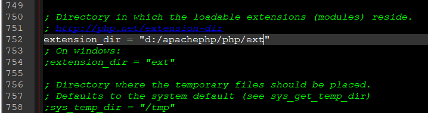

こんにちは。明月です。
ネットサーフィンすれば、「Java vs C#」、「PHP vs Java」、「PHP vs C#」など、言語の優秀性、性能、短所などを比較して書いた投稿が多いです。
筆者の場合はプログラム言語を3～4個の言語を運用が可能ですが、言語の間に比較するのは意味がないと思います。
例えば、リンゴとミカンがあります。リンゴが栄養が多いか？ミカンが栄養が多いか？健康にいいものか？どの果物がもっといいかというとみんなリンゴはリンゴの味で美味しいし必要な栄養があるし、ミカンはミカンで美味しいし栄養がありますといいますね。
プログラム言語も同じです。これから紹介するPHPはウェブスクリプトですが、JavaとC#の比べてPHPだけの魅力があるプログラム言語です。
それで意味がない比較を少ししてPHPの特性を説明します。
PHPとJavaを比べるとPHPはJavaより基本環境設定が簡単です。「PHP+apache+DB」の設定で終わります。Javaの場合は「apache+tomcat+java+DB」です。そういえば、「tomcat」だけ追加されたですね。
PHPの場合はコンパイル言語ではなく、スクリプト言語なので、ソース修正する時に、別途のコンパイルの手続きが要らなく、画面ページに反映が早いですが、Javaの場合は再コンパイル、サーバ再起動などの手続きが必要なので修正から反映までPHPの開発時間が圧倒的に早いです。
プログラムのパフォーマンスはプログラム言語の性能もありますが、開発する人(デベロッパー)の能力の比重が多いので、省略します。
まだ、プロぐジェクト管理能力に関してもPHPが大きいプロジェクトには悪く、Javaが大きいプロジェクトでよいといいますが、これも設計、環境設定なのによって差があるので、どっちがいいかとは言えません。
オープンソースはコミュニティに関してはJavaの方が大きいではないかと思います。でもPHPコミュニティも小さくなく、すごく大きいです。筆者はメイン言語がPHPよりJavaなので筆者の感じだけの可能性もあります。
上の状況だけみればPHPがJavaよりいい言語みたいに見えます。
PHPの場合はスレッド処理が難しいです。例えば、PHPではゲームサーバーを作られないです。正確には出来ないことではなく、難しいというのが正確だと思います。Javaの場合はThreadPoolを利用してソケットサーバーを作ればそれがアプリケーションサーバーになりますね。
それで私の場合は単純な「ウェブ-DB」ならPHPを利用するし、「ウェブ-バッチ-コアー-DB」の場合はJavaを、Windowアプリの場合はC#を利用しますね。
これからPHPを説明する前にApacheとPHPをインストールしましょう。
link - [CentOS] PHPインストールする方法
link - [Window] Apacheをインストール方法、サービスに登録する方法。
筆者はWindow基準で説明します。
上のリンクをみてapacheをインストールしましょう。開発環境を作ることなので、サービス登録まではいらないです。
筆者は「Dローカルディスク」の「apachephp」のフォルダにインストールしました。
そしてPHPをダウンロードしましょう。
link - https://www.php.net/downloads.php
筆者の場合は「7.3.9」バージョンをダウンロードしました。注意点は「None Thread Safe」ではなく、「Thread Safe」バージョンをダウンロードしなければならないです。
Zipファイルをダウンロードして「apachephp」の下位フォルダの「php」を生成して圧縮を解凍しました。
「php」フォルダにいってみれば、「php.ini-development」のファイルがありますが、「php.ini」ファイルに変更します。
そしてメモ帳でphp.iniファイルを開いて「 ;extension_dir = "./" 」の部分を探します。
ここのコメントを解除して「phpフォルダ+/ext」や「./ext」で修正しましょう。

そしてapache設定ファイル「conf/http.conf」ファイルに行って下記の内容を追加しましょう。
PHPIniDir "d:/apachephp/php"
LoadModule php7_module "d:/apachephp/php/php7apache2_4.dll"
AddType application/x-httpd-php .html .php
そして開始ページをindex.htmlからindex.phpに修正します。
ここまで設定が完了すればPHPインストールは完了しました。起動しましょう。
先、apacheフォルダのhtdocsフォルダの中に「index.php」ファイルを生成して「<?php phpinfo()?>」を追加します。
(※既存にあったindex.htmlファイルは削除しましょう。)
apacheフォルダのbinフォルダに移動してapacheを起動しましょう。

ブラウザでlocalhostで接続しましょう。
上のPHP情報画面が出ると開発設定は完了しました。
これからはPHPを開発するように開発ツール(IDE)をインストールしましょう。
PHP IDEに関して様々なツールがありますが、筆者の場合は「eclipse」が慣れているので「eclipse」をインストールしてみましょう。
「eclipse」ホームページに接続します。
link - https://www.eclipse.org/downloads/?FEATURED_STORY
タウンロードページに移動すると下記のイメージみたいに「Download Package」があります。
link - https://www.eclipse.org/downloads/packages/
パッケージページをみれば「php開発用」があります。(参考にeclipseを使うようにはjavaがインストールされなければならないです。)
link - [Java スタディ - 1] Javaとは？、Javaインストール、Eclipseインストール
ダウンロードをして適当なところで圧縮を解凍して「eclipse」を起動しましょう。
起動すると「workspace」を設定するウィンドウがでますが、適当なところを設定しましょう。
私の場合は「apachephp」の「workspace」に設定しました。
起動した後で「create project」を選択します。
そしてプロジェクト名前を適当に決めてprojectフォrだを「apachephp\htdocs」に設定します。
つまり、apacheサーバのドキュメントルートを設定することです。

そしたら先に作成した「index.php」がロードされることを確認できます。
ここに「hello.php」を作成して「hello world」を作成してみます。
PHPは別にコンパイルが要らないので、そのままブラウザに「localhost/hello.php」に接続しましょう。
上の画面まで出るとPHPのインストールからIDEのインストールまで完了できました。
これからPHP開発する準備が終わりましたね。
- [PHP] Reflection - Variable編2020/02/01 03:00:00
- [PHP] Reflection - Method編2020/01/31 03:00:00
- [PHP] Reflection - Class編2020/01/30 03:00:00
- [PHP] エラーページ処理方法(追加: ob_cleanとdie関数使用方法)2020/01/29 03:00:00
- [PHP] 分散設定ファイル(.htaccess) 使用方法2020/01/28 03:00:00
- [PHP] データベース(mariaDB)を連結して使う方法2020/01/24 03:00:00
- [PHP] IOに関して2020/01/23 03:00:00
- [PHP] requireとinclude、そして「@」の使用方法2020/01/22 03:00:00
- [PHP] Fatal及びNotice,、Warningメッセージ処理する方法2020/01/19 03:00:00
- [PHP] xDebug設定する方法2020/01/18 03:00:00
- [PHP] $_SERVER, $GLOBALS, $_GET, $_POST, $_REQUEST, $_COOKIE, $_SESSION, $_FILES, $_ENV(getenv())2020/01/17 03:00:00
- [PHP] データ確認関数(var_dump, debug_zval_dump, print_r)2020/01/16 03:00:00
- [PHP] 例外処理(try ~ catch ~ finally)2020/01/15 03:00:00
- [PHP] 配列とリスト(list)2020/01/14 03:00:00
- [PHP] インタフェースと抽象クラス、クラス継承、parent、this2020/01/13 03:00:00
- [PHP] Reflection - Variable編2020/02/01 03:00:00
- [PHP] Reflection - Method編2020/01/31 03:00:00
- [PHP] Reflection - Class編2020/01/30 03:00:00
- [PHP] エラーページ処理方法(追加: ob_cleanとdie関数使用方法)2020/01/29 03:00:00
- [PHP] 分散設定ファイル(.htaccess) 使用方法2020/01/28 03:00:00
- [PHP] データベース(mariaDB)を連結して使う方法2020/01/24 03:00:00
- [PHP] IOに関して2020/01/23 03:00:00
- [PHP] requireとinclude、そして「@」の使用方法2020/01/22 03:00:00
- [PHP] Fatal及びNotice,、Warningメッセージ処理する方法2020/01/19 03:00:00
- [PHP] xDebug設定する方法2020/01/18 03:00:00
- [PHP] $_SERVER, $GLOBALS, $_GET, $_POST, $_REQUEST, $_COOKIE, $_SESSION, $_FILES, $_ENV(getenv())2020/01/17 03:00:00
- [PHP] データ確認関数(var_dump, debug_zval_dump, print_r)2020/01/16 03:00:00
- [PHP] 例外処理(try ~ catch ~ finally)2020/01/15 03:00:00
- [PHP] 配列とリスト(list)2020/01/14 03:00:00
- [PHP] インタフェースと抽象クラス、クラス継承、parent、this2020/01/13 03:00:00